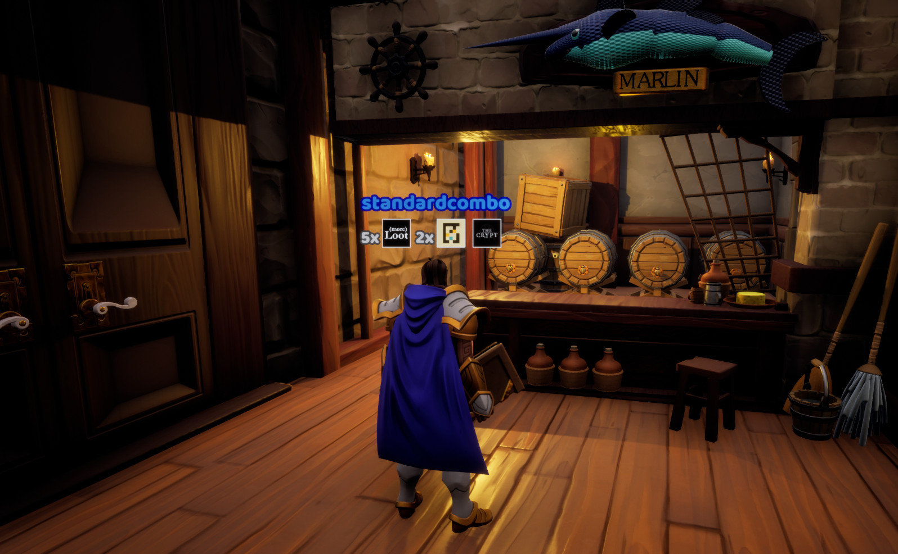
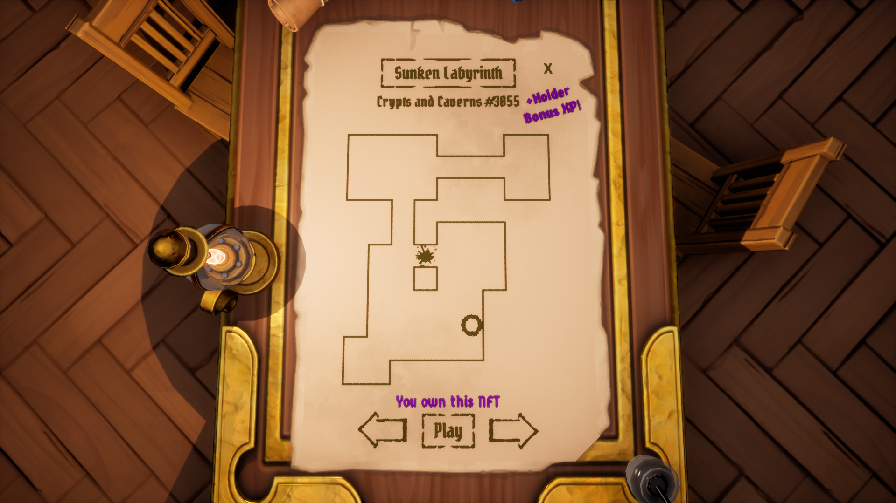
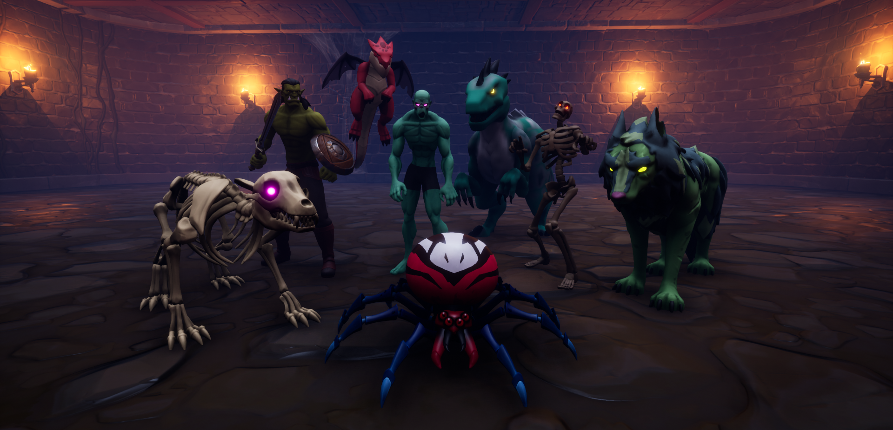

Grant Proposal
June 10, 2022 Loot MMO has submitted a grant proposal to gitcoin's 14th funding round. Support us with your cryptovote! Gitcoin uses a quadratic funding approach, which means any donations from the public, even as low as $1, go a long way in generating matching amounts from the total pool of funds. The number of people contributing is more important than their amounts: https://gitcoin.co/grants/6419/loot-mmo This project aims to accomplish three objectives:- An open source construction kit for creating Unreal Engine-powered multiplayer games on the Core platform using Lootverse NFTs;
- Game jams and community events, in which the Loot community collaborates in creating the world, games and experiences, using this construction kit; and
- An online social hub to connect everyone's creations.

Character selection screen. Different Loot collections are valid for equipping your character: Loot, More Loot and Genesis Adventurers are thus far integrated.
Framework
The framework is an open-source construction kit, a set of gameplay building blocks that can be combined, modified or expanded to craft any number of experiences. This includes, but is not limited to:- NPCs & combat
- Weapons, armor, abilities
- Inventory
- Progression
- Procedurally generated levels
- Integration with various collections: Loot, More Loot, Genesis Adventurers and Crypts and Caverns (more to come).

The social hub connects adventurers and quests, and can host special events.
Social Hub
A starting point for Loot MMO, the social hub has been designed as a cozy space where players and builders can meet, discuss Loot and form parties to head off on adventures. Doors, maps and other interactive objects double as connection points── portals into the experiences created by the community. Where this "home base" evolves will be up to everyone to decide from here. The tavern is a sub-section of the social hub where players can prepare and serve drinks, complete with chair-throwing brawls. Pictured here are also the nameplate badges, indicating how many tokens players own from each collection.
Community Engagement
Loot MMO comes to life by engaging the community in building the world. These programs have the added value of reactivating lapsed Loot-folk and beyond, by attracting external game devs, to Loot. Game jams These limited-time events, generally lasting a few weeks, are a proven way to incentivize world-building. The first game jam will occur soon after receipt of funding, as well as version 1.0 of the framework. The prize pool will be announced at the start of the jam, along with different submission categories. These categories help prompt the creative process and serve as criteria for judging submissions and selecting the winners. Bounties As the project encounters specific needs, bounties can be announced as challenges to the community, with a specified reward for each challenge. Content events Promoting the launch of new content, or special spins on existing content are great ways to keep players engaged while celebrating the community creators. These events have the effect of attracting outside players, bringing fresh eyes to the Lootverse. From the social hub players can form parties and head to adventures. Pictured here is the Crypts and Caverns map, an entry point to dungeons generated from the NFT data, and one example of how new experiences can be plugged into the hub.
About the Author
My name is Gabriel, a.k.a. standardcombo. I'm a full-time game developer, with 18 years of experience in the industry and 19 published titles. My currently active indie project is Stone Story RPG, an ASCII-animated dark world, full of monsters and mysteries. I enjoy playing highly competitive games, such as Starcraft, Chess and Hearthstone. As a founding engineer at Manticore, I have full understanding and confidence in Core's capabilities. Core is a free-to-play (and free to create) open platform dedicated to empowering creators. Loot struck me immediately, not only as a stand-out project in web3, but as a perfect use-case for Core, to bring Loot to life as a MMORPG. Core benefits from the development of this MMO framework, as it can be reused for other projects and help grow Core's ecosystem. Manticore is more than happy to create a high-fidelity foundation for Loot, deploying our tech and skills to advance the Lootverse in the best ways that we know how.
What started as an experiment in lighting became a high-quality tileset. Core contains tools designed for rapid development of multiplayer 3D games, built on top of the Unreal Engine. This scene is a tileset of 3D blocks that can be quickly rearranged to achieve different level designs. Both the tileset and level were created from scratch in about 4 hours by a single developer.
Grant and Funds
Funds will be allocated for game jam rewards and bounties to generate content for the Loot MMO. The size of the grant directly affects the amount of content that can be incentivized this way. In the event of minimal funding, we commit to organizing at least one game jam where grant funds return to the community in the form of prizes, followed by related community events that promote the new content. Stretch goals: Ideally, the Loot MMO will continuously expand with more content and better systems. Based on learnings from the first game jam and the first generation of content, a version 2.0 of the framework will be produced, followed by more rounds of community events. Other stretch goals include bounties and engaging contractors to fill project needs. To sustain Loot MMO over the longer term, the launch of a new NFT collection (potentially in conjunction with a DAO) could provide recurring revenue and is an important stretch goal. Remaining or residual funds will be directed at related activity, such as gas costs in deploying contracts, testing, URLs/hosting and other such expenses. Monsters of the crypt. Through the process of kitbashing, these base NPCs can be infinitely customized to fill necessary world content. The NPC AI KIT drives their behavior, providing off-the-shelf combat and AI systems for enemy (or allied) NPCs.
Roadmap
Complete - Prototypes and technical viability studiesAlmost done - Social Hub: 98% - Framework: 50% - Document and open-source the repositories
Post-funding - Game jam #1 - Jam results event
Stretch goals
- Launch new NFT collection
- DAO
- Framework 2.0
- Game jam #2
- Land

Overview of the application architecture. The Unreal Engine provides fundamental client and game server features. Core extends Unreal, adding development tools, an expansive catalogue of content and an automatically-scaling server backbone. Loot MMO is implemented on top of Core, as a series of components forming the Framework, plus a social hub that ties together all adventures and quests produced by the community.